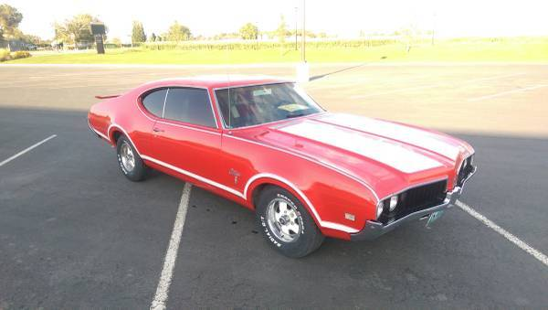

My main hobby since I have been little has been cars. I grew up on a small farm working with my brothers, my dad,
and my grandpa. In the winter months, since we didn't have quite as much work to do we would work on the family cars
which then turned to fixing up old cars.
When it was my turn, we bought a 1969 Cutlass that was pretty rough. Over the next 3 years, with the help of my family,
we fixed all the rust, got a new interior, painted it, and fixed most of the mechanical issues. Since that car there has been
many more. We typically finish about one car every two years or so between all of us. It keeps us talking to each other and
now it is spreading to my own kids. This is a picture of the car that I did in high school. Unfortunately, when my wife and I
had our first kid we sold it to help pay for hospital bills.

Links to my other pages
Index
Major
Class